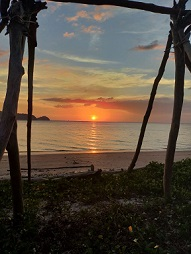
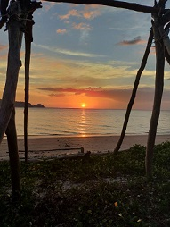

In 2020 and 2021 are sad years not only for me but for Malaysians as well.For these 2 years, my family and I celebrated Hari raya not as usual that we always celebrate due to current circumstances that happen in world which is covid19.We cannot celebrate Hari Raya together as usual. My sisters and brothers are unable to return to hometown because of MCO. Nevertheless, my parents decided to celebrate Raya Eid, we prepared all menus that we normally prepared. Such as, "Rendang Ayam","Ketupat",Lemang and more. The raya vibes for these 2 years were very sad and we did not enjoy our raya. Our morning raya really gave big impact especially for me because we always go to mosque and will perform "solat raya" together, but since we could not go the mosque, we just performed it at our house without complete family members.Plus we could not visit our relatives home and it was one of the reason why the vibes of raya were dull. I believe that, i am not the only one who feel this way, but malaysians also feel sad that could not return to their hometown, meet their family and celebrate with them. I hope next year, malaysians can celebrate raya eid normally together with their loved one and enjoy raya as usual.
"A journey is best measured in friends, rather than miles"
Trip with my besties were the best thing that i have ever done. Travelling with them made me realize that every single moments were precious and I want to cherish the moments that we made together for a long time. All of us love beach and in our opinion, beach is one of the perfect place for healing.Then, 5 of us decided to go to Tanjung Dawai that located in Sungai Petani, Kedah. During evening, we went there by rented a car and it only took about 30 minutes to arrive.Since we went there during evening around 6pm, we got opportunity to see the sunset.The scenery was spectacular and we quickly grabbed our phone to snap the view to keep it for memories. We went there during weekdays, and fortunately that place were not crowded by people,so we can enjoy our times there. We took a lot of pictures and went back to college since it was getting dark. I had a good time with them, eventhough it was a short trip but i am very gratedul that i can spent and meet them again after 2 years.And last but not least, i wish we can keep our friendship for a long time and travel again together.
 
